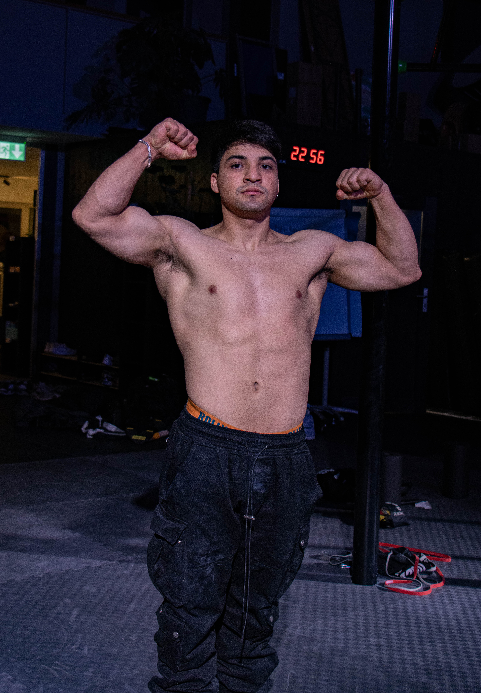

Desarrollador Ágil de Software & Arquitecto de Bases de Datos. Mi pasión por la informática comenzó transformando datos complejos en soluciones visuales eficientes. Creo firmemente en la programación ágil para entregar valor real y rápido.
He optimizado esquemas SQL que reducían el tiempo de respuesta un 80% y diseñado interfaces modernas para dashboards de datos. Me enfoco en la calidad del código y la sostenibilidad de la infraestructura.
Hablemos de tu proyecto